SI-Toolkit for Web Testing
現場の"いいね"が詰まった
自動テストツールです。
- プログラミング不要
- エビデンス自動取得
- マルチブラウザ・デバイス対応
- テストスクリプト自動生成
現場の"いいね"が詰まった
自動テストツールです。
SI-Toolkit for Web Testing(SIT-WT)はWindowsまたはMac OS X上で動作します。またいずれのOSでもJava (Version 8以上) が必要です。
以下のリンクからjarファイルをダウンロードします。
ダウンロードしたjarファイルをダブルクリックで実行します。 SIT-WTが起動し、フォルダを選択する画面が表示されます。
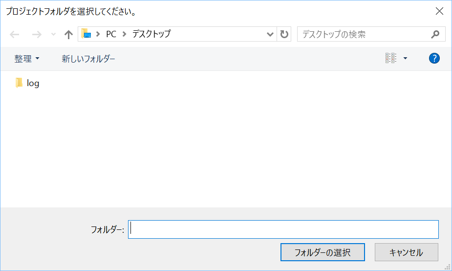
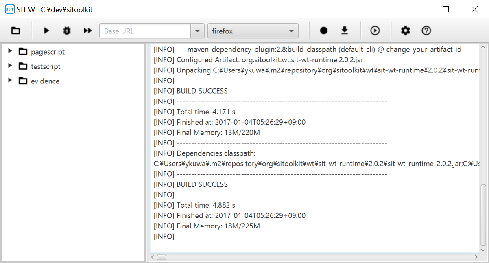
ツールバーのボタンをクリックするとサンプルのWebサイトが起動します。 サンプルWebサイトには以下のURLでアクセスできます。
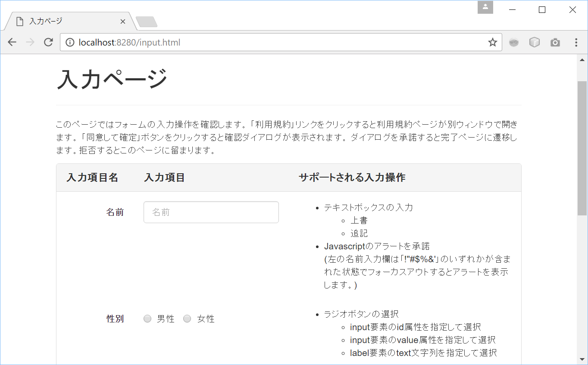
サンプルのテストスクリプト(SampleTestScript.xlsx)がtestscriptフォルダにに出力されています。 画面左のツリーでSampleTestScript.xlsxを右クリックし「開く」を選択するとテストスクリプトを開くことができます。
テストスクリプトの詳細な仕様はGitHubのWiki テストスクリプトの仕様 ページを参照してください。
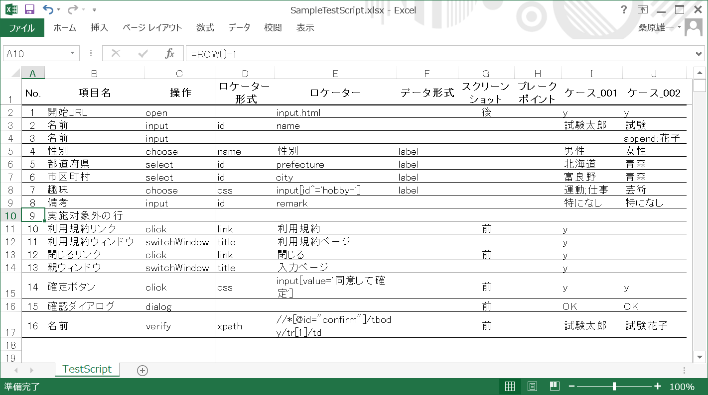
サンプルスクリプトを選択し、ツールバーのボタンをクリックします。 セレクトボックスで選択したブラウザでテストが実行されます(*1)。テスト実行が終了するとエビデンスが表示されます。
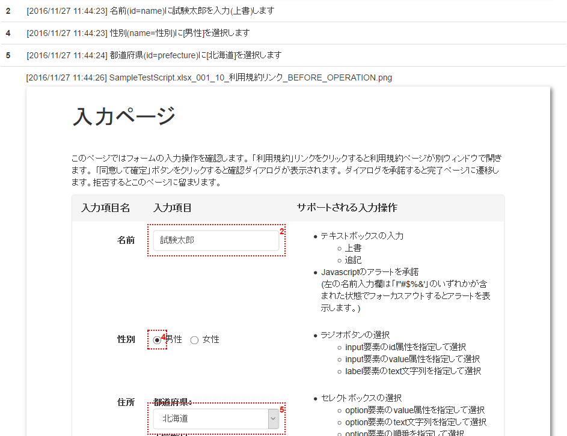
画面左のツリーでtestscript/SampleTestScript.xlsxを選択し、 をクリックします。
| ボタン | 動作説明 |
|---|---|
| テスト実行を一時停止します。 | |
| テスト実行を再開します。 | |
| テストステップを1つ戻します。 | |
| 次のテストステップを実行します。 | |
 |
表示中のページのテストスクリプトを作成します。 |
| 表示中のページ内で指定されたロケーターに一致する要素を表示します。 | |
| テスト実行を終了します。 |
画面左のツリーでtestscript/SampleTestScript.xlsxを選択し、 をクリックします。 SampleTestScript.xlsxには以下の様に001と002の2つのテストケースが定義されていますが、 はこれら２ケースを同時に実行します。
| # | 項目名 | 操作 | ケース_001 | ケース_002 |
|---|---|---|---|---|
| 1 | 開始URL | click | y | y |
| 2 | 名前 | input | 試験太郎 | 試験花子 |
画面左のツリーでtestscript以下の任意のフォルダを右クリック＞「新規」＞「スクリプト」を選択します。

ダイアログが表示されたら任意のファイル名を入力します。
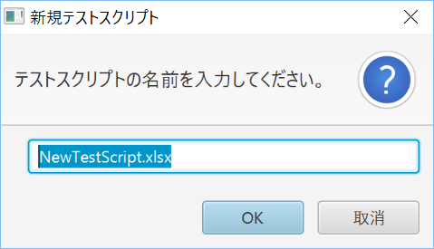
ダイアログで指定したファイル名のスクリプトが作成されます。
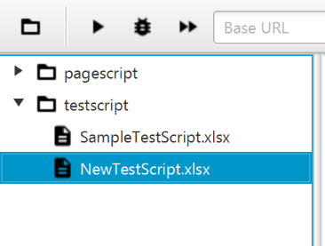
スクリプトはExcelやLibreOfficeなどの.xlsxファイルに対応したソフトで編集することができます。 テストスクリプトの仕様 を参照してください。
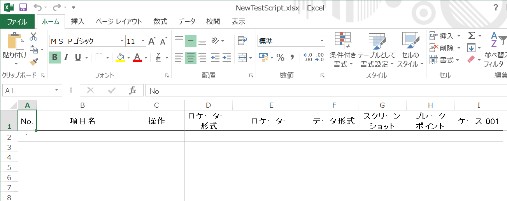
SIT-WTのツールバーでボタンをクリックします。
Firefoxが起動します(*2)。
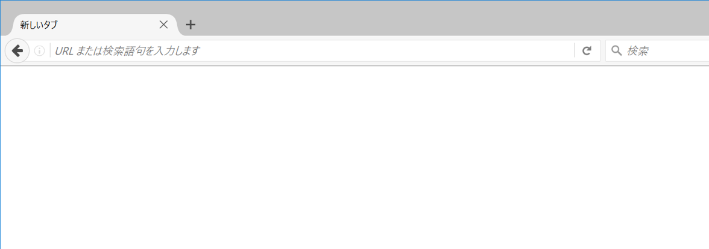
Firefoxで「ALT」キー＞「ツール」メニュー＞Selenium IDEを選択し、Selenium IDEを起動します。
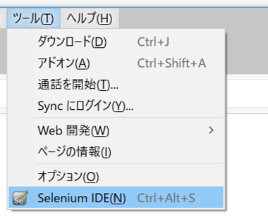
Selenium IDEの再生ボタンがONの状態でFirefoxを操作すると操作内容がスクリプトに記録されます(*3)。
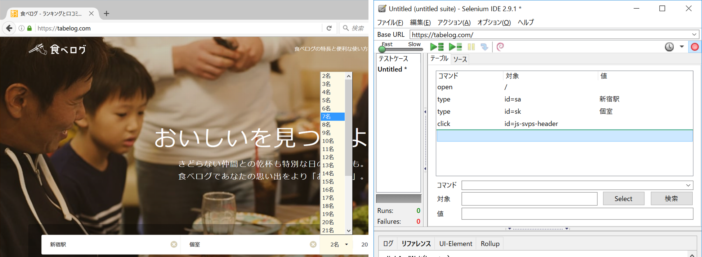
Selenium IDEの「ファイル」メニュー＞「テストケースを保存」を選択しスクリプトを保存します。
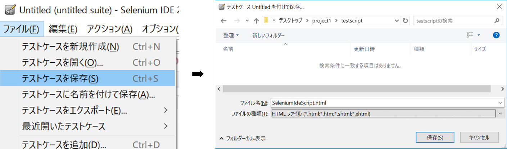
SIT-WTでSelenium IDEのスクリプトを選択し、をクリックします。
テストの実行、エビデンスの作成が通常のSIT-WTのスクリプトと同じように行われます。
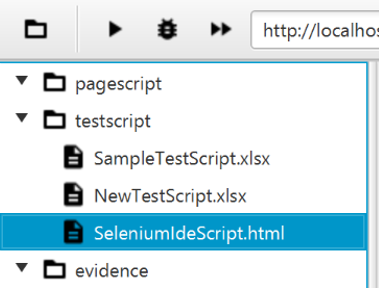
SIT-WTでをクリックします。
セレクトボックスで選択しているブラウザが起動します。
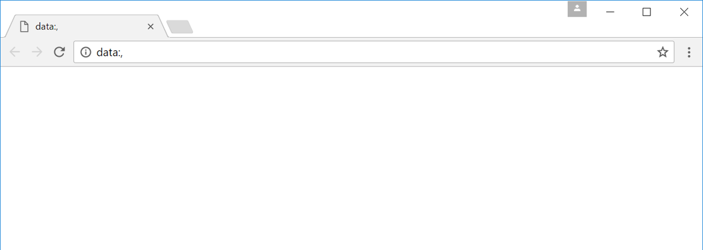
ブラウザを操作してスクリプトを生成したいページを表示します。
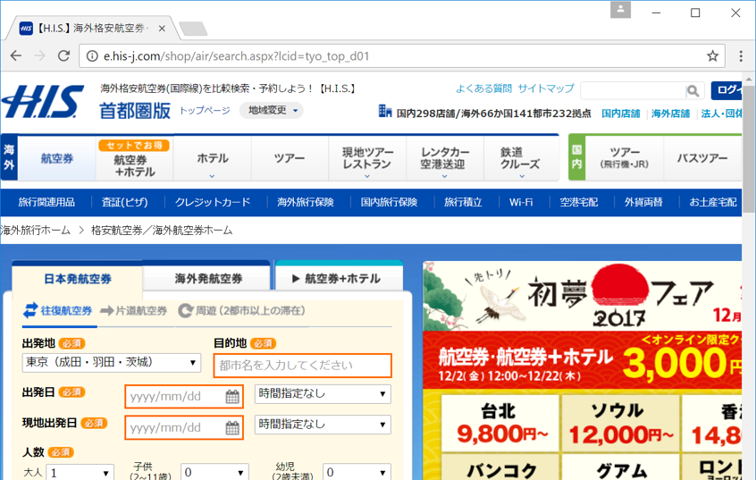
SIT-WTでをクリックします。
表示中のページをテストするためのスクリプトが生成され、表示されます(*4)。
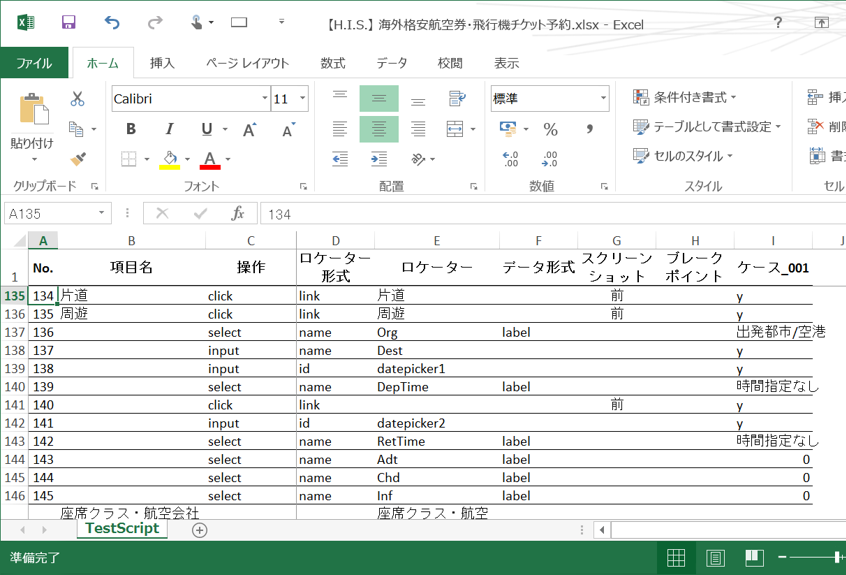
生成されたスクリプトは他のスクリプトからinclude操作で使用できます(*5)。また、スクリプトをtestscriptディレクトリに移動し通常のスクリプトとしても使用できます。
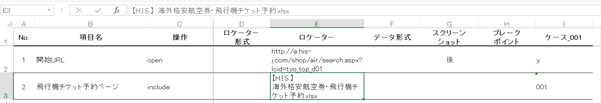
SIT-WTはモバイルのブラウザ/アプリもテストできます。 モバイルでもPCブラウザと同様にテストスクリプトのデバッグ実行やエビデンス作成ができます。
Mobile Safari Android Browser